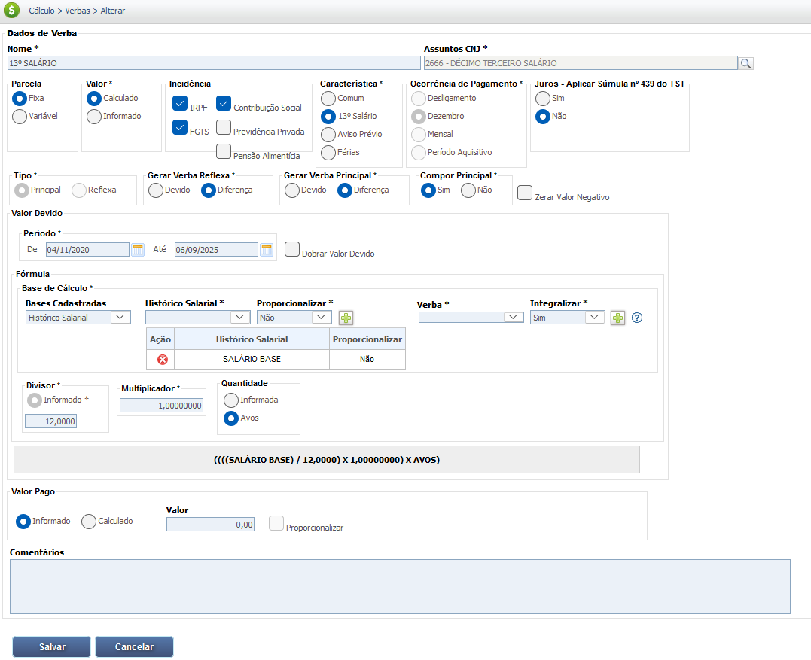

Décimo Terceiro Salário
O 13º salário, também conhecido como gratificação natalina, é um direito do trabalhador instituído pela Lei nº 4.090/62. Ele corresponde a um salário extra pago no final do ano e é um direito que se adquire mês a mês.
Impacto das Faltas Injustificadas: O direito ao avo mensal do 13º salário é perdido se o empregado tiver mais de 15 faltas não justificadas no respectivo mês, conforme a Lei 4.090/62. Portanto, as faltas injustificadas têm impacto direto no cálculo da gratificação natalina.
O 13º salário é pago em duas parcelas:
Primeira parcela: Deve ser paga entre 1º de fevereiro e 30 de novembro. O valor corresponde à metade do salário recebido no mês anterior.
Segunda parcela: Deve ser paga até 20 de dezembro e corresponde ao valor total do 13º salário (com base na remuneração de dezembro), descontando a primeira parcela já adiantada.
Se o empregado tiver salário variável (como comissões), o cálculo da primeira parcela deve incluir a média dessas comissões, atualizadas monetariamente, recebidas até o mês anterior.
Base Legal e Jurisprudência
O direito ao 13º salário (gratificação natalina) tem por base a legislação e jurisprudência a seguir:
Fontes Normativas
Constituição Federal de 1988:
- Artigo 7º, inciso VIII:
Assegura a todos os trabalhadores urbanos e rurais o "décimo terceiro salário com base na remuneração integral ou no valor da aposentadoria".
Lei nº 4.090/62:
- Instituição da Gratificação Natalina:
Instituiu o 13º salário e estabelece que a gratificação corresponde a 1/12 da remuneração por mês de serviço ou fração igual ou superior a 15 dias.
Lei nº 4.749/65 e Decreto nº 57.155/65:
- Regras de Pagamento:
Determinam que o pagamento do 13º deve ser feito em duas parcelas, sendo a primeira (equivalente à metade do salário) entre 1º de fevereiro e 30 de novembro.
Lei nº 12.506/11 (Aviso Prévio Proporcional):
- Cálculo Proporcional:
A alteração no cálculo do aviso prévio reflete no cálculo do 13º salário proporcional, pois o período adicional do aviso prévio (mesmo que indenizado) é contado para o cálculo.
Jurisprudência
A jurisprudência detalha a aplicação prática das leis em casos específicos, evitando divergências de interpretação:
Composição da Remuneração
Súmula nº 45 do TST (Horas Extras):
As horas extras habituais, quando pagas regularmente, integram a remuneração para o cálculo do 13º salário.
OJ nº 181 da SDI-1 do TST (Variáveis):
Confirma que as parcelas variáveis (como comissões) devem ser incluídas no cálculo do 13º salário e que a média dessas verbas deve ser monetariamente atualizada.
Condições de Pagamento
Súmula nº 171 do TST (Justa Causa):
A rescisão do contrato por justa causa não dá direito ao recebimento do 13º salário proporcional.
Súmula nº 253 do TST (Gratificações Semestrais):
As gratificações semestrais devem ser calculadas no 13º salário com base no duodécimo (proporcionalmente ao período trabalhado).
Natureza Salarial
Súmula nº 688 do STF (Contribuição Previdenciária):
Ratifica que é legítima a incidência de contribuição previdenciária sobre o 13º salário, pois ele possui natureza salarial.
Base de Cálculo e Deduções
A base de cálculo do 13º salário não se restringe apenas ao salário-base do empregado. Conforme a legislação e a jurisprudência trabalhista, diversas verbas de natureza salarial, recebidas de forma habitual, devem ser incluídas no cálculo. O objetivo é garantir que a gratificação natalina reflita a remuneração integral do trabalhador.
Para o cálculo da primeira parcela, considera-se a remuneração do mês anterior ao do pagamento. Já para a segunda parcela, a base é a remuneração de dezembro.
Veja o que compõe a base de cálculo:
Salário-base: O valor fixo mensal.
Horas Extras: A média das horas extras realizadas e pagas ao longo do ano deve ser incorporada ao cálculo.
Adicionais: Adicionais como o noturno, de periculosidade e de insalubridade devem ser somados à remuneração.
Comissões e Gorjetas: Se o empregado recebe comissões ou gorjetas de forma habitual, a média desses valores no período aquisitivo é incluída na base de cálculo.
Gratificações: Gratificações habituais e prêmios pagos com regularidade também entram na conta.
A lógica é que qualquer parcela que seja paga com frequência e que remunere o serviço prestado integra o 13º salário, garantindo que o valor final seja proporcional à sua remuneração real.
Exemplo de Cálculo da Base Bruta:
Imagine um empregado com salário-base de R$ 2.500,00, que recebe uma média de R$ 300,00 de horas extras por mês e um adicional noturno de R$ 200,00.
Remuneração total de cálculo:
Salário-base: R$ 2.500,00
Média de horas extras: R$ 300,00
Adicional noturno: R$ 200,00
Base de cálculo do 13º: R$ 2.500,00 + R$ 300,00 + R$ 200,00 = R$ 3.000,00
Para o cálculo da primeira parcela, o valor seria R$ 3.000,00 / 2 = R$ 1.500,00.
Para a segunda parcela, o valor seria a diferença entre o total do 13º (R$ 3.000,00) e o valor já adiantado na primeira parcela (R$ 1.500,00), além dos descontos de INSS e IRRF que incidem sobre o valor total.
Deduções da Base de Cálculo
Existem deduções obrigatórias que incidem sobre o valor total, principalmente no pagamento da segunda parcela, que é quando os descontos são efetivamente realizados.
As principais deduções são:
Imposto de Renda Retido na Fonte (IRRF): O 13º salário é considerado um rendimento tributável. O cálculo do IRRF é feito de forma exclusiva e separada do salário mensal, com base em uma tabela específica divulgada pela Receita Federal. A alíquota é aplicada sobre o valor total do 13º (salário-base + verbas adicionais) após o desconto do INSS.
Contribuição ao INSS (Instituto Nacional do Seguro Social): O 13º salário é uma base de cálculo para a contribuição previdenciária. O desconto é feito sobre o valor integral da gratificação e segue as alíquotas progressivas da tabela do INSS, variando conforme a faixa salarial do empregado. O valor descontado é repassado pelo empregador ao governo para custear benefícios como aposentadoria, auxílio-doença, entre outros.
Observação: A primeira parcela do 13º salário não sofre nenhuma dedução. Por ser um adiantamento, os descontos de INSS e IRRF são realizados somente na segunda parcela, sobre o valor total da gratificação. É por isso que o valor da segunda parcela costuma ser menor do que o da primeira.
Exemplo de Deduções:
Considerando um 13º salário total de R$ 3.000,00.
1. Cálculo do INSS:
Utilizando a tabela progressiva do INSS (valores de referência):
- Faixa até R$ 1.412,00 (7,5%): R$ 105,90
- Faixa de R$ 1.412,01 a R$ 2.666,68 (9%): R$ 112,92
- Faixa de R$ 2.666,69 a R$ 4.000,03 (12%): (R$ 3.000,00 - R$ 2.666,68) * 0,12 = R$ 39,99
- Total de INSS a deduzir: R$ 105,90 + R$ 112,92 + R$ 39,99 = R$ 258,81
2. Cálculo do IRRF:
A base para o cálculo do IRRF é o valor total do 13º menos a dedução do INSS.
- Base de cálculo do IRRF: R$ 3.000,00 - R$ 258,81 = R$ 2.741,19
Utilizando a tabela do IRRF (exclusiva para 13º), considerando que a alíquota de 7,5% é para valores acima de R$ 2.259,20:
- Imposto a deduzir: (R$ 2.741,19 * 7,5%) - R$ 169,40 (parcela a deduzir) = R$ 36,14
3. Valor Líquido:
Valor Total Bruto: R$ 3.000,00
- Dedução INSS: R$ 258,81
- Dedução IRRF: R$ 36,14
Valor Líquido a receber na 2ª parcela: R$ 3.000,00 - R$ 258,81 - R$ 36,14 - R$ 1.500,00 (1ª parcela já paga) = R$ 1.205,05
Verbas Reflexas
Embora o 13º salário seja uma verba calculada com base na remuneração do empregado, ele próprio também gera incidências e reflexos em outras obrigações e direitos trabalhistas e previdenciários.
Os principais reflexos do 13º salário são:
1. Fundo de Garantia por Tempo de Serviço (FGTS)
O valor pago a título de 13º salário (incluindo a primeira e a segunda parcela) constitui base de cálculo para o recolhimento do FGTS, na alíquota de 8%. O empregador deve depositar o FGTS correspondente ao 13º salário até o dia 7 do mês seguinte ao seu pagamento (ou no dia 10 de janeiro do ano subsequente, em guia separada, para o valor total).
2. Multa de 40% do FGTS na Rescisão
Em casos de dispensa sem justa causa, o valor do 13º salário pago durante a vigência do contrato, bem como o 13º salário proporcional devido na rescisão, entram no cômputo da base de cálculo para a multa rescisória de 40% sobre o saldo do FGTS.
3. Médias e Integrações
Assim como verbas habituais (horas extras, adicionais) integram a base de cálculo do 13º salário, o valor do 13º salário, por sua vez, pode refletir no cálculo de outras verbas, especialmente aquelas que utilizam a remuneração média como base. A média de valores que compôs o 13º salário deve ser considerada, por exemplo, na composição da remuneração base para:
- Cálculo de Férias e seu adicional de 1/3 constitucional;
- Aviso Prévio Indenizado (a média salarial);
- Diferenças salariais apuradas em Dissídios Coletivos ou ações judiciais.
É crucial que o cálculo do FGTS sobre o 13º salário seja feito corretamente, pois o não recolhimento ou o recolhimento a menor gera passivo trabalhista para a empresa.
Calculadora (Simulação)
Cálculo Simples
Calcule o décimo terceiro para o ano completo.
Lançamento no PJe-Calc
A seguir, confira o passo a passo para o lançamento da verba no PJe-Calc, utilizando a opção "Expresso":
-
Acessar Verbas e Escolher Lançamento: No menu de
navegação à esquerda, clique na opção Verbas para iniciar o lançamento. Após o
comando,
será exibida a tela para escolha do Lançamento da Verba. Escolha a opção Expresso.

- Seleção da Verba: O sistema abrirá as opções de verbas, escolha a verba 13º Salário e clique no botão Salvar
-
Quadro de Verbas e Ações: O sistema exibirá um quadro
com os campos:
- Ações - contendo as opções de configurações da verba selecionada (parâmetros,
ocorrências e
exclusão)

-
- Parâmetros da Verba

-
- Ocorrências da Verba

-
- Excluir

- Verba Principal - verba selecionada para lançamento.
- Verba Reflexa - em que ao clicar no botão Exibir serão listadas todas as verbas reflexas ligadas a Verba Principal.
- Parametrização da Verba: Ao clicar no botão Parâmetros da Verba serão exibidas todas as configurações necessárias para a parametrização da Verba Principal. 
- Registro de Ocorrências: Ao clicar no botão Ocorrências da Verba serão exibidas todas as configurações necessárias para registro das ocorrências da Verba Principal.